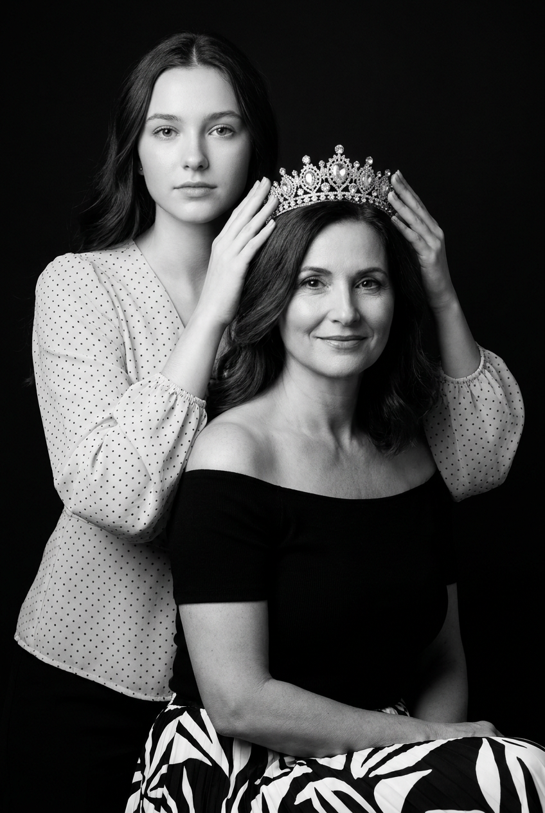
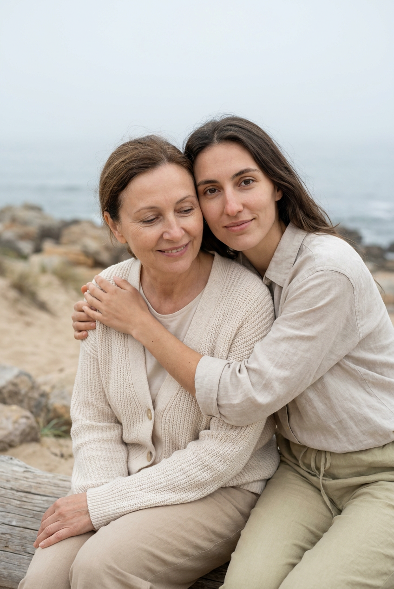
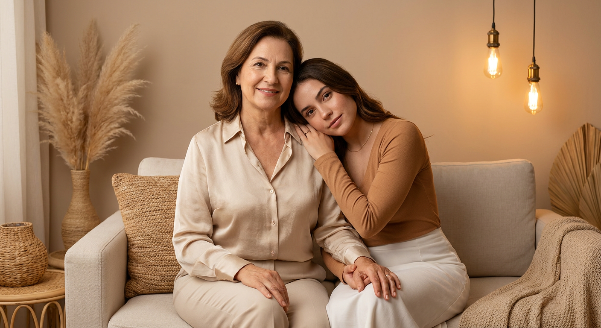
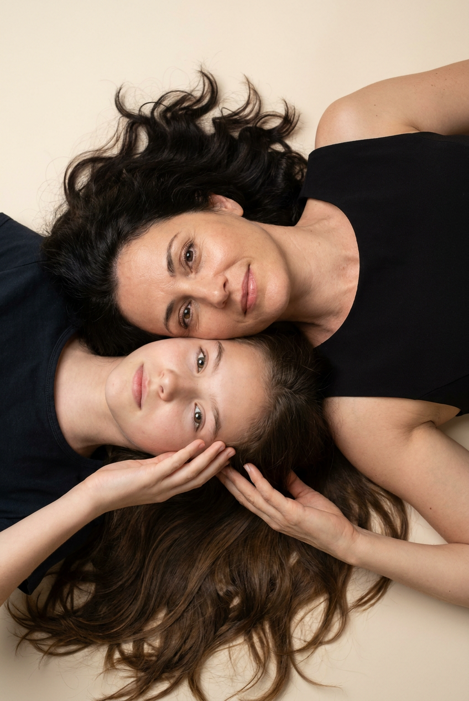
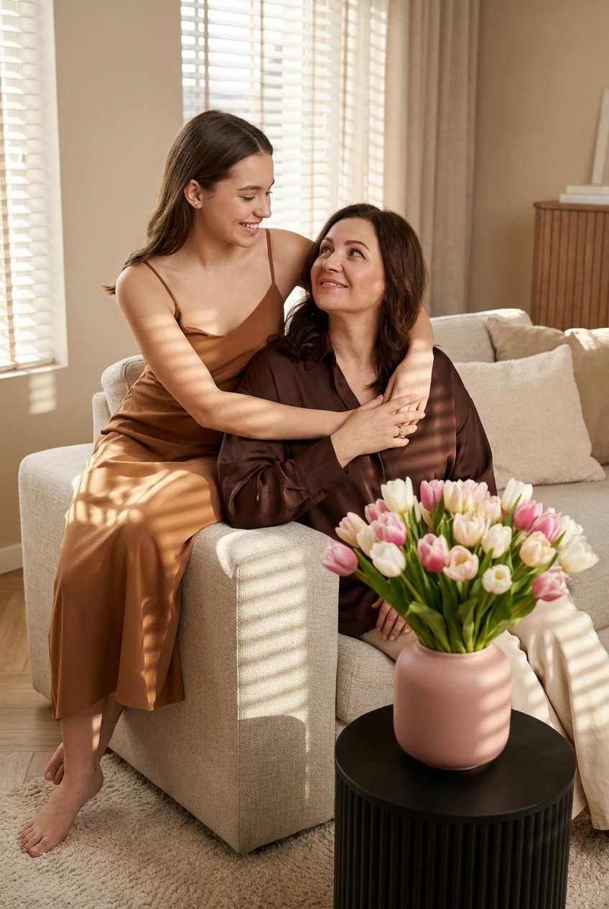
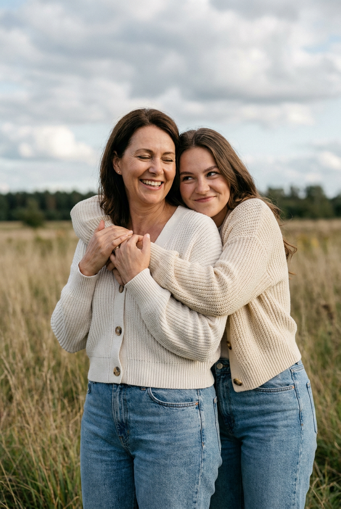
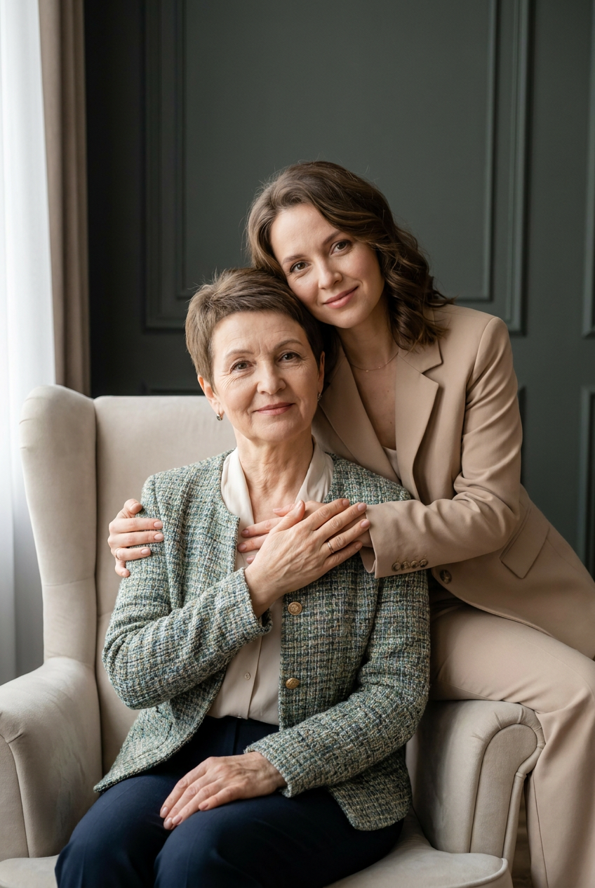
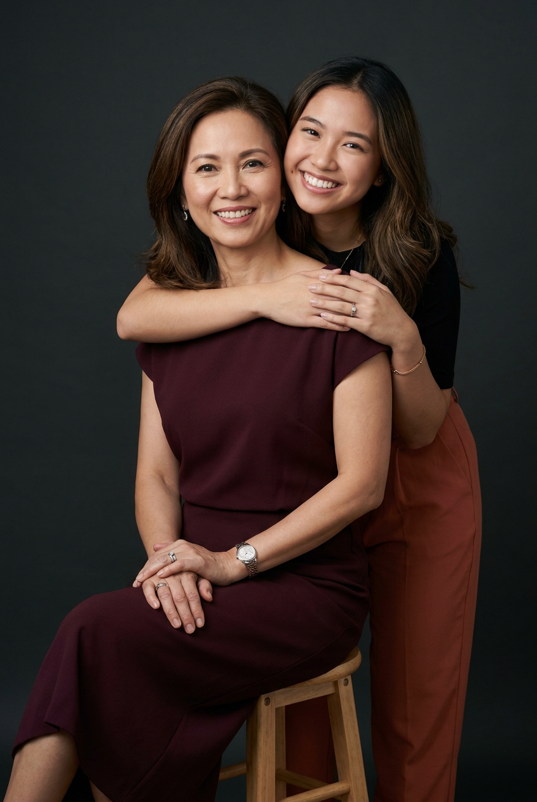
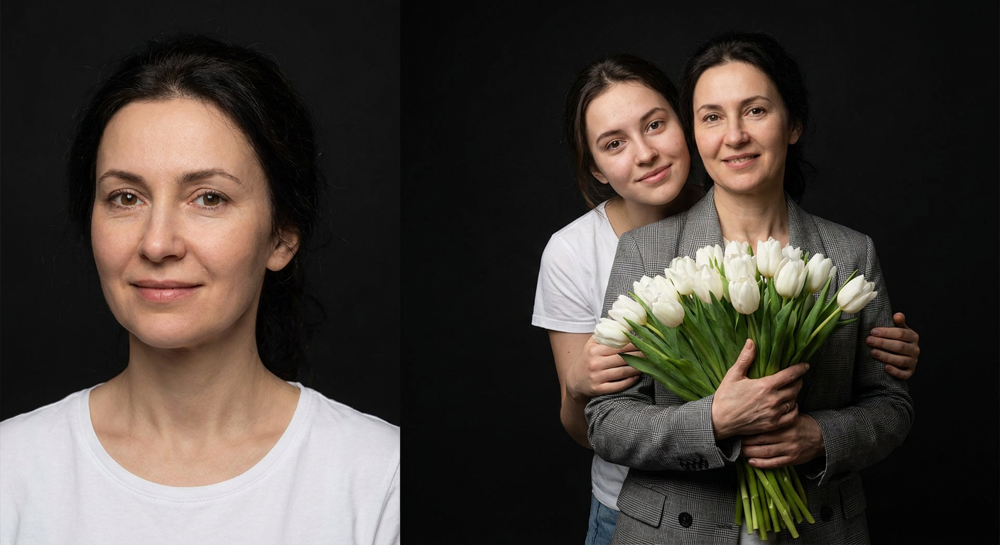

ИИ-фото с мамой: 9 промптов для нейросети

Не всегда получается собрать семью на красивую фотосессию: мешают расстояние, занятость или отсутствие удачного света. Генерация помогает воссоздать такой кадр по референсам и выбрать образ, позу и настроение без студии.
В подборке — девять сценариев для фото мамы и дочери: от чёрно-белого портрета с тиарой до уютных объятий дома, съёмки в поле, кадра сверху и букета белых тюльпанов.
Как сгенерировать такое фото: пошагово
Нужен снимок анфас при ровном свете, лицо в кадре целиком, без тёмных очков и головных уборов. Разрешение от 1000 пикселей по короткой стороне. Чем чётче исходник, тем точнее модель повторит черты.
Выберите сценарий ниже и нажмите «Копировать» — текст уйдёт в буфер целиком, вместе с командой сохранения внешности. Эта команда стоит первой строкой и отвечает за то, чтобы на выходе было ваше лицо, а не случайное.
Кнопка «Сгенерировать» рядом с каждым промптом открывает модель в новой вкладке. Nano Banana Pro работает с референсом лица — в отличие от моделей, которые генерируют портрет с нуля и узнаваемость теряют.
Промпт — в поле ввода, портрет — через загрузку референса. Порядок значения не имеет, но без референса команда сохранения внешности работать не будет: модели нечего сохранять.
Для сторис и ленты берите 9:16, для превью и обложек — 4:3. Первый результат редко идеален: если поза или свет ушли не туда, поправьте соответствующую часть промпта и запустите заново. Обычно хватает двух-трёх итераций.
9 промптов для генерации
1. Мама в короне
Строго сохранить внешность по загруженному референсу: черты лица, пропорции, мимику и текстуру кожи без изменений. Фотореалистичный чёрно-белый студийный портрет мамы и взрослой дочери в выразительной символичной композиции. Мама сидит прямо, с достоинством слегка поворачивает голову к объективу; на ней чёрный оффшолдер или элегантный открытый топ с мягкой линией декольте, подчёркивающей шею и плечи. Дочь стоит позади и обеими руками бережно надевает или поправляет на маме изящную тиару. Пальцы естественные, положение рук симметричное, жест торжественный и заботливый. У мамы спокойное мудрое лицо и лёгкая уверенная улыбка, у дочери мягкое внимательное выражение. Сохрани реальные черты лиц, форму глаз, носа, губ, подбородка, линию челюсти, возраст и узнаваемость обеих. Мягкий студийный свет, глубокие серые оттенки, тонкая ретушь, высокая детализация кожи и ткани, вертикальный кадр, объектив 85 мм, f/4.
2. Объятие у моря

Строго сохранить внешность по загруженному референсу: черты лица, пропорции, мимику и текстуру кожи без изменений. Тёплый фотореалистичный семейный портрет мамы и взрослой дочери на открытом воздухе. На заднем плане — мягко размытый морской или прибрежный пейзаж, спокойный горизонт и естественный свет. Мама стоит или сидит расслабленно, её взгляд направлен немного вниз либо в сторону камеры, выражение лица тихое и ласковое. Дочь расположена сбоку и чуть позади: одной рукой обнимает маму за плечи, второй поддерживает её плечо или мягко держит сзади; щека дочери касается головы или виска мамы. Поза доверительная, без постановочной скованности. Сохрани индивидуальные особенности лиц, естественную мимику, возраст и настоящую семейную схожесть, не смешивай лица. Одежда спокойных светлых оттенков, натуральные фактуры. Атмосфера близости и любви, рассеянный дневной свет, малая глубина резкости, объектив 50 мм, f/2.8, вертикальное соотношение 2:3.
3. Нежность на диване

Строго сохранить внешность по загруженному референсу: черты лица, пропорции, мимику и текстуру кожи без изменений. Фотореалистичный студийный портрет мамы и дочери в уютной светлой комнате. Женщины сидят рядом на мягком диване или скамье; дочь наклоняется к маме, обнимает её сбоку и прижимается головой к её плечу или щеке. Одна рука дочери лежит на груди мамы, вторая мягко охватывает плечи. Мама сидит уверенно и спокойно, немного развёрнута к камере; одну руку держит на коленях, другой легко касается руки дочери. У обеих естественные ласковые выражения, без широкой постановочной улыбки. Одежда выполнена в мягкой нейтральной гамме: светлые свитера, блузы или платья с деликатной текстурой. Сохрани реальные лица, их пропорции, форму глаз, носа, губ, овал, возраст и индивидуальную мимику. Свет рассеянный, фон минималистичный, уютная editorial-эстетика, объектив 85 мм, f/3.2, вертикальный кадр 2:3, высокая детализация ткани и кожи.
4. Лицом к лицу сверху

Строго сохранить внешность по загруженному референсу: черты лица, пропорции, мимику и текстуру кожи без изменений. Создай нежный фотореалистичный вертикальный семейный портрет в формате 2:3, снятый строго сверху. Используй два загруженных снимка как референсы: первое лицо принадлежит маме, второе — дочери. Обе женщины лежат на спине на светлом полу или другой чистой светлой поверхности, их головы находятся рядом. Мама лежит головой к верхнему краю кадра, дочь — головой к нижнему, поэтому лица оказываются напротив друг друга: щека к щеке или лоб ко лбу. Композиция симметричная, воздушная и трогательная, руки могут мягко лежать рядом с лицами или касаться плеч. Не смешивай внешность и не меняй возраст: сохрани форму лица, глаза, брови, нос, губы, овал, тон кожи и естественную разницу между мамой и дочерью. Мягкий равномерный свет без жёстких теней, светлая одежда, спокойный фон, объектив 50 мм, камера точно над моделями, реалистичная кожа и высокая резкость лиц.
5. Тёплый взгляд дома

Строго сохранить внешность по загруженному референсу: черты лица, пропорции, мимику и текстуру кожи без изменений. Сделай фотореалистичный семейный editorial-портрет мамы и взрослой дочери в светлой гостиной или студии. Мама сидит на светлом текстурном диване, корпус немного повёрнут к дочери, взгляд спокойный и ласковый. Дочь стоит или полусидит рядом, наклоняется к маме и одной рукой обнимает её за плечо, второй опирается на мамину руку или колено. Дочь смотрит на маму с мягкой улыбкой, мама отвечает ей тёплым взглядом — между ними ощущаются доверие и близость. Сохрани индивидуальные лица, форму глаз, носа, губ, подбородка и линии челюсти, натуральную кожу, возраст и узнаваемость обеих женщин. Одежда элегантная, но повседневная: молочные, бежевые и серо-голубые оттенки, мягкие ткани. Естественный оконный свет, светлый интерьер, деликатные тени, объектив 50 мм, f/2.8, вертикальный кадр 2:3, журнальная lifestyle-съёмка без чрезмерной ретуши.
6. Объятие в поле

Строго сохранить внешность по загруженному референсу: черты лица, пропорции, мимику и текстуру кожи без изменений. Фотореалистичная вертикальная lifestyle-фотография мамы и взрослой дочери в формате 2:3. Съёмка проходит в открытом поле с высокой травой или сухой луговой растительностью; вдали видна размытая линия деревьев, горизонт расположен низко, а большую верхнюю часть кадра занимает облачное небо. Мама стоит чуть левее центра и ближе к камере, дочь находится позади и обнимает её сзади обеими руками. Ладони дочери мягко лежат поверх груди и плеч мамы, объятие крепкое, но бережное. Обе смотрят спокойно, настроение тихое и искреннее. Используй реальные лица с двух референсов без смешивания, омоложения или изменения возраста; сохрани глаза, брови, нос, губы, овал, кожу и естественную мимику. Одежда простая и удобная, в природных бежевых, молочных и зелёных оттенках. Мягкий вечерний свет, лёгкий ветер в волосах и траве, объектив 85 мм, f/2.8, малая глубина резкости.
7. Домашний портрет в кресле

Строго сохранить внешность по загруженному референсу: черты лица, пропорции, мимику и текстуру кожи без изменений. Фотореалистичный вертикальный семейный editorial-портрет мамы и дочери в элегантном домашнем интерьере. Мама сидит в светлом мягком кресле с высокой спинкой, дочь стоит за ним, немного наклоняется вперёд и обнимает маму сзади. Руки дочери видны в кадре и лежат поверх плеч и верхней части груди мамы; жест выглядит естественным, заботливым и спокойным. Мама слегка развёрнута к объективу, дочь смотрит в камеру или на маму с тёплой улыбкой. Пространство оформлено дорогой светлой мебелью, спокойной благородной палитрой и тёмной декоративной стеновой панелью либо глубоким серо-зелёным фоном. Сохрани лица обеих женщин по отдельным референсам: возрастные особенности, пропорции, тон кожи, глаза, брови, нос, губы, овал и мимику. Одежда лаконичная, с премиальными фактурами. Мягкий направленный свет, объектив 85 мм, f/3.5, натуральная кожа, вертикальное 2:3, стиль дорогой lifestyle-фотосессии.
8. Улыбка в студии

Строго сохранить внешность по загруженному референсу: черты лица, пропорции, мимику и текстуру кожи без изменений. Фотореалистичная студийная fashion-фотография мамы и дочери с тёплым семейным настроением. Мама сидит на простом деревянном табурете или студийном стуле, корпус слегка развёрнут к камере, руки расслабленно сложены на коленях. Дочь стоит позади или немного сбоку, наклоняется к маме и обнимает её обеими руками за плечи и шею; ладони хорошо видны на плече или верхней части груди. Их лица находятся близко, обе женщины смотрят в объектив и искренне улыбаются. Поза заботливая, живая, без напряжения. Сохрани отдельные черты лиц по референсам: форму глаз, носа, губ, скул, подбородка, линию лица, тон кожи, возраст и естественную мимику, не объединяй внешность. Одежда стильная и лаконичная, с мягкими нейтральными оттенками и чистыми силуэтами. Однотонный студийный фон, большой рассеянный источник света, лёгкая тень, объектив 50 мм, f/4, вертикальное соотношение 2:3, высокая детализация.
9. Букет белых тюльпанов

Строго сохранить внешность по загруженному референсу: черты лица, пропорции, мимику и текстуру кожи без изменений. Создай фотореалистичный студийный портрет мамы и взрослой дочери в нежной стильной композиции. Мама стоит или слегка развёрнута к камере и держит перед собой большой роскошный букет белых тюльпанов. Цветы должны быть пышными и свежими, с длинными зелёными стеблями, реалистичной фактурой лепестков и листьев. Дочь находится позади и мягко обнимает маму обеими руками за плечи и корпус, её щека почти касается головы мамы. Объятие тёплое и искреннее, без скованной позы. У мамы спокойное доброжелательное выражение, у дочери — нежная улыбка; обе могут смотреть в объектив. Используй отдельные референсы лиц и сохрани индивидуальность, возраст, форму глаз, носа, губ, подбородка, овал, кожу и естественную мимику, не смешивай черты. На дочери белая свободная футболка или лаконичный светлый топ; одежда мамы элегантная, в нейтральной гамме. Мягкий студийный свет, светлый фон, объектив 85 мм, f/3.2, вертикальный кадр 2:3, детальная передача цветов.
Что важно учесть в этом стиле
Для семейного ИИ-портрета нужны отдельные референсы мамы и дочери. Лучше брать фотографии анфас или в лёгком повороте, без очков, сильных фильтров и перекрывающих лицо волос. Так нейросети проще удержать разницу в возрасте и не смешать черты.
Эмоция зависит не только от улыбки. Пропишите, куда смотрят героини, где лежат руки, насколько близко соприкасаются головы. Для мягкого результата добавьте рассеянный свет, объектив 50–85 мм, вертикальный формат 2:3 и натуральную кожу без пластиковой ретуши.
Идеи для вариаций
- Замените студийный фон на кухню с утренним светом или дачную веранду.
- Добавьте семейную реликвию: брошь, платок, старую книгу или мамины серьги.
- Попросите сделать кадр в дождливую погоду у окна с каплями на стекле.
- Поменяйте букет тюльпанов на пионы, полевые цветы или ветви эвкалипта.
- Сделайте серию в разных настроениях: спокойный взгляд, смех, поцелуй в висок.
- Для чёрно-белой версии укажите плёночное зерно, мягкий контраст и свет в стиле классического портрета.
Как собрать свой промпт
Сначала задайте формат и жанр: вертикальный портрет 2:3, lifestyle, студийная или уличная съёмка. Затем опишите героинь, их расположение, контакт между ними и выражения лиц. Отдельным предложением зафиксируйте локацию, одежду, фон и источник света.
В конце добавьте технические параметры: объектив 50 или 85 мм, диафрагму, глубину резкости, характер ретуши и нужное разрешение. Если результат неудачный, меняйте по одному параметру и делайте 4–8 генераций, а не переписывайте весь текст сразу.
Ошибки, из-за которых кадр не получается
- Один общий референс на двоих. Нейросеть может смешать лица или сделать обеих женщин похожими друг на друга.
- Слишком общая поза. Формулировка «пусть обнимаются» не объясняет, где находятся руки и куда повернуты головы.
- Несовместимые указания. Не просите одновременно жёсткий солнечный свет и мягкую студийную тень.
- Перегруженный фон. Много предметов отвлекает от лиц и повышает риск странных деталей.
- Отсутствие контроля рук. Именно пальцы чаще всего требуют повторной генерации или отдельного редактирования.
- Слишком сильное омоложение. Укажите реальные возрастные особенности, иначе семейная схожесть будет выглядеть неестественно.
Частые вопросы
Как сделать такое ИИ-фото бесплатно?
Попробуйте Kandinsky и Шедеврум: они подходят для текстовой генерации, но точное сохранение двух лиц по референсам может быть ограничено. В Krea AI и Arena.ai удобнее тестировать варианты и работать с изображением-основой, однако бесплатный доступ, очередь, разрешение и число попыток меняются. Для узнаваемого результата загрузите отдельные качественные фото, используйте короткий понятный промпт и закладывайте несколько генераций.
Как сохранить сходство мамы и дочери?
Загрузите два отдельных референса и прямо укажите, какое фото относится к каждой героине. Добавьте запрет на смешивание лиц, омоложение и изменение возраста. Лучше использовать снимки с похожим освещением и нейтральным выражением лица.
Какой формат выбрать для семейного портрета?
Для публикации в соцсетях и печати чаще всего подходит вертикальный формат 2:3. Для аватарки или открытки можно попросить квадрат, а для сцены с небом, морем или интерьером — вертикальный кадр с большим свободным пространством сверху.
Что делать, если нейросеть искажает руки?
Уточните положение каждой руки: например, «ладони дочери лежат поверх плеч мамы, все пальцы видны, кисти естественного размера». Упростите жест, уберите лишние предметы и сгенерируйте несколько вариантов. Лучший кадр можно дополнительно отредактировать инструментом исправления деталей.